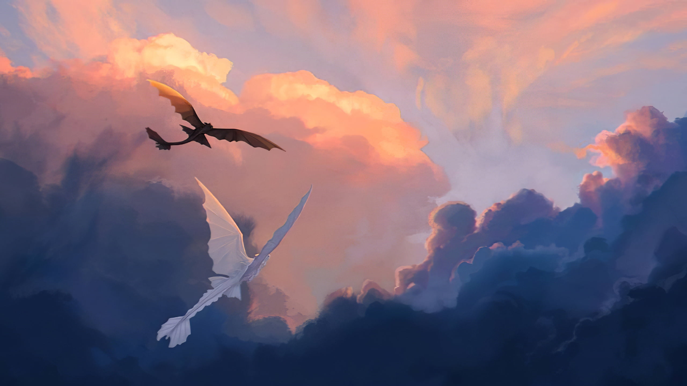

Berk is a rugged, windswept island nestled in the frigid waters of the Barbaric Archipelago. Its jagged cliffs rise defiantly against the relentless assaults of the North Sea, battered by ceaseless storms and icy gusts. But despite its harsh exterior, Berk pulses with life and resilience. Perched atop its rocky peaks are the clustered homes of its inhabitants, Vikings who have forged an unbreakable bond with the dragons that soar through the skies.
In the heart of Berk lies the bustling village, a vibrant tapestry of wooden structures and dragon-built nests. Here, dragons of all shapes and sizes coexist with their human counterparts, weaving through narrow alleyways and soaring overhead with equal ease. The aroma of fish and dragon fire mingles in the air, creating a heady brew that is distinctly Berk. At the center of it all stands the Great Hall, where chieftains gather to discuss matters of clan and dragon.
At the heart of Berk's story is Hiccup Horrendous Haddock III, the unlikely hero who forever changed the fate of dragons and Vikings alike. Born to Stoick the Vast, Berk's formidable chieftain, Hiccup is a misfit among his people. Gangly and awkward, he lacks the brawn and bravado prized by his fellow Vikings. But what he lacks in physical prowess, he more than makes up for with his quick wit and compassionate heart.
Hiccup's world is turned upside down when he encounters Toothless, a rare Night Fury dragon feared and misunderstood by both Vikings and dragons alike. Through patience and understanding, Hiccup earns Toothless's trust and embarks on a journey that will redefine the very fabric of Berk. Together, they navigate the complexities of friendship, loyalty, and courage, bridging the divide between two seemingly irreconcilable worlds.
As Berk's skies echo with the triumphant roars of dragons and the laughter of Vikings, Hiccup's legacy endures as a testament to the power of empathy and acceptance. Through his unwavering belief in the inherent goodness of both dragons and humans, he forges a bond that transcends fear and prejudice, uniting Berk in a shared vision of harmony and coexistence. And as the sun sets over the horizon, painting the sky in hues of crimson and gold, Berk stands as a beacon of hope in a world where anything is possible, so long as one has the courage to believe.
The story goes on...
Continuing the saga of Hiccup and Toothless, the second installment follows their journey through a transformed Berk where humans and dragons coexist harmoniously. However, their peace is threatened by the arrival of a formidable adversary, Drago Bludvist, who aims to conquer the world with his dragon army. As Hiccup unravels his true destiny and confronts startling revelations about his past, he must unite his friends and dragons to confront Drago in an epic battle that will determine the fate of both species.
In this captivating sequel, themes of friendship, loyalty, and bravery are explored in depth as Hiccup and Toothless navigate challenges of self-discovery and redemption. With stunning visuals and gripping action, the story delivers a poignant message about the importance of empathy and acceptance in a world fraught with division and fear.
The dreams of yesterday are the hopes of today and the reality of tomorrow. Science has not yet mastered prophecy. We predict too much for the next year and yet far too little for the next ten.
Reaching for the End
In the epic conclusion of the "How to Train Your Dragon" trilogy, we journey once more to the mystical island of Berk, where the bond between humans and dragons continues to evolve under the leadership of Hiccup, now the wise and compassionate chieftain. Yet, Berk faces its greatest challenge yet as it grapples with the looming threat of Grimmel the Grisly, a cunning dragon hunter whose nefarious schemes threaten to unravel the harmony they have fought so hard to achieve. As Hiccup and his loyal companions embark on a perilous quest to seek out a mythical haven known as the Hidden World, they are faced with heart-wrenching decisions and impossible sacrifices. Along the way, they encounter breathtaking landscapes and encounter new dragons, each more magnificent and awe-inspiring than the last, as they journey deeper into uncharted territory. As the final battle looms on the horizon, Hiccup must confront his own doubts and fears, drawing strength from the unbreakable bond he shares with Toothless, his faithful Night Fury. Amidst swirling clouds and roaring seas, the fate of Berk hangs in the balance as Hiccup and Toothless face their ultimate challenge, risking everything they hold dear in a bid to protect the dragons they love and secure a future where humans and dragons can coexist in peace. In a stirring climax that will leave audiences breathless, the story of "How to Train Your Dragon 3" unfolds with breathtaking visuals, heart-pounding action, and an emotional depth that resonates long after the credits roll, culminating in a triumphant conclusion that celebrates the power of friendship, courage, and the unyielding spirit of adventure.
